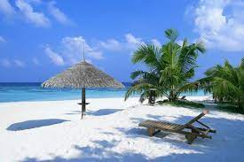
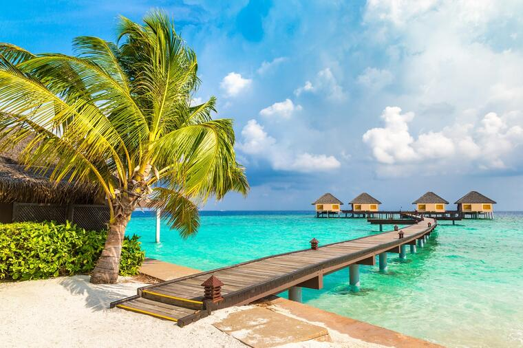
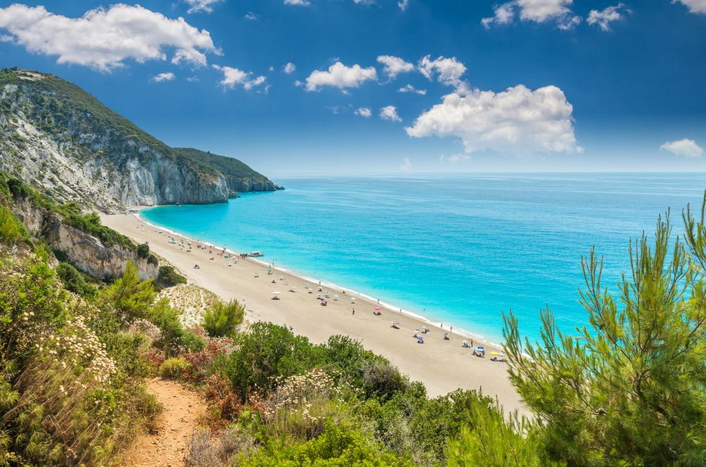

Baía do Sancho é o nome de uma baía de águas claras localizada a oeste do Morro Dois Irmãos e a leste da Baía dos Golfinhos, no arquipélago de Fernando de Noronha, no estado de Pernambuco, Brasil. O local abriga uma praia de mesmo nome.Na porção central da baía são encontradas lajes rochosas que abrigam uma diversificada fauna e flora marinha.Pela 2° vez consecutiva, a Baía do Sancho foi eleita a melhor praia do mundo pelos usuários do TripAdvisor.A praia é isolada, coberta por vegetação nativa e limitada por uma alta falésia, onde pássaros constroem seus ninhos. Tem areia branca e mar verde-esmeralda. A baía permite a parada de embarcações para banho, sem causar danos aos corais: uma das poucas na Ilha em que isso é possível. De fevereiro a junho, duas cachoeiras se formam a partir da água da chuva e jorram de cima de um precipício. Na época da desova das tartarugas marinhas (janeiro a junho), a visita é proibida no horário entre as 18h e as 6h.
Cayo de Agua es el nombre de una isla del este del mar Caribe que geográficamente pertenece al Archipiélago Los Roques y administrativamente está organizado como parte de la Dependencias Federales, Venezuela, además de ser parte del Parque Nacional del mismo nombre y de la Autoridad Única de Aérea de los Roques, el nombre de este cayo tiene su origen en el hecho de tener pozos de agua dulce dentro de él.Se encuentra al norte de Venezuela, en el extremo oeste del Parque Nacional "Los Roques", por el norte limitan con los cayos de Puntas de Cocos, Pelona de Cayo de agua, Bequevé y Selesquí, y por el sureste se encuentran los cayos Dos Mosquises. Cayo de Agua se encuentra relativamente alejada del aeródromo o Aeropuerto de Los Roques ubicada en el extremo contrario (el oeste) del archipiélago en la isla de Gran Roque.Cayo de Agua es popular dentro del archipiélago gracias a la belleza de sus arenas blancas y playas solitarias, las aves que se pueden encontrar en sus alrededores y por el hecho de que forma con otros cayos vecinos un pequeña piscina natural, allí también se encuentran pozos de agua dulce, una de las actividades más practicadas es el buceo.
Playa Paraíso ist ein Ortsteil von Adeje, in der Provinz Santa Cruz de Tenerife. Der Ort liegt an der Westküste der Kanarischen Insel Teneriffa direkt am Atlantischen Ozean, etwa sechs Kilometer westlich vom Hauptort und etwa sechs Kilometer nördlich vom Touristikzentrum Costa Adeje entfernt. Die Hauptstadt Santa Cruz de Tenerife ist etwa 60 Kilometer, der Flughafen Teneriffa Süd ist 28 Kilometer entfernt.Playa Paraíso ist einer der ersten Touristenorte Teneriffas. Der Ort wird von vier Hotel- beziehungsweise Apartmenthochhäusern aus den siebziger Jahren dominiert, die sich im zentralen Bereich der Ortschaft befinden. Weiterhin gibt es im Ort weitere flachere Hotelbauten sowie zahlreiche gastronomische Einrichtungen, allerdings ist hier weniger Trubel als in den Nachbarorten Los Cristianos und Playa de Las Américas.[1] Die Mehrzahl der Touristen, die den Ort besuchen, kommen aus dem deutsch- oder englischsprachigen Raum.Der Ort verfügt über zwei kleine Badestrände in den Buchten, dazwischen ist die Küste felsig. In einer der Buchten befindet sich direkt am Strand der Lago Paraíso, ein kostenpflichtiger Meerwasserpool. Hier befindet sich auch die einzige Tauchbasis im Ort. Die Bucht bietet zahlreiche Möglichkeiten zu Tauchgängen an der vulkanisch geprägten Küste und gehört zu den besten Tauchplätzen der Insel.[2] Sogar Wale sind in der Bucht vor Playa Paraíso anzutreffen. An der felsigen Küste befindet sich eine kleine Promenade, die die Strände miteinander verbindet.